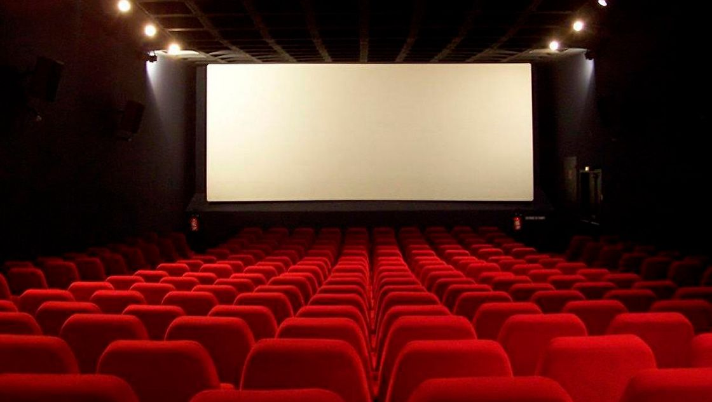

El cinema és una forma d'art i entreteniment que combina imatges en moviment i so per explicar històries. Des dels seus inicis a finals del segle XIX, ha evolucionat fins a convertir-se en una de les indústries culturals més influents del món.